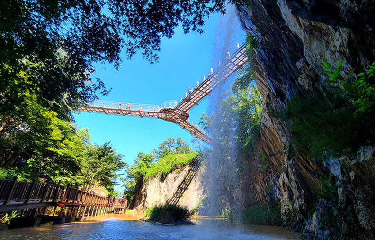
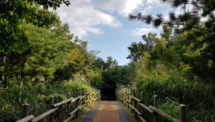
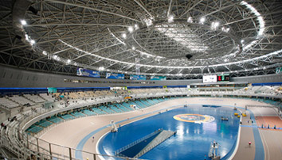

경기도 광명은 서울과 가까운 경기도의 한 도시로만 알려져 있습니다.
하지만, 자세히 들여다보면 다양한 매력이 있는 광명인데요.
알면 알수록 더 매력적인 광명을 동, 서, 남, 북 나누어 자세히 파헤쳐 보겠습니다.
경기도 광명은 서울과 가까운 경기도의 한 도시로만 알려져 있습니다.
하지만, 자세히 들여다보면 다양한 매력이 있는 광명인데요.
알면 알수록 더 매력적인 광명을 동, 서, 남, 북 나누어 자세히 파헤쳐 보겠습니다.
도약의 날개 단 서(西) 광명
광명 서부권에서도 변화의 바람이 불고 있습니다. 광명시흥신도시와 광명시흥테크노밸리 등 대규모 사업이 추진되고 있기 때문인데요. 사업이 완료되면 광명은 50만 명이 거주하는 대도시이자 직(職)·주(住)·락(樂)을 겸비한 친환경 명품 자족도시로 거듭날 전망입니다.
먼저 광명시흥신도시를 살펴볼까요? 광명시흥신도시는 경기도 광명시 광명동, 옥길동, 노온사동, 가학동과 시흥시 과림동, 무지내동, 금이동 일대에 조성됩니다. 3기 신도시 가운데 최대 규모로 1271만㎡ 규모에 총 7만 가구가 공급되며, 여의도 면적의 1.3배 규모의 공원･녹지 및 수변공원을 갖춘 친환경 녹색도시로 조성될 예정입니다.
한국토지주택공사(LH)에 따르면 지난 2월부터 도시기본구상을 위한 국제공모를 진행하고 있으며, 연내 광명시흥 신도시에 대한 지구계획수립 관련 용역에 착수한 뒤 내년까지 지구계획을 승인하고 2025년 착공에 들어가 오는 2027년부터 주택 7만 가구를 순차적으로 공급할 계획이라고 합니다.
20년 이상된 노후 아파트와 오래된 주택 등이 즐비했던 서(西) 광명 일대는 ‘광명아크포레자이위브’, ‘광명푸르지오센트베르’ 등이 들어서면서 분위기가 밝아지고 있으며, 3기 신도시까지 조성되면 지역 가치가 크게 오를 것으로 예상됩니다. 다음으로 수도권 서남부의 첨단산업 거점으로 조성되는 광명시흥테크노밸리도 살펴볼까요? 광명시흥테크노밸리는 광명시 가학동과 시흥시 논곡·무지내동 일원 244만9000m² 부지에 일반산업단지 · 유통단지 · 첨단산업단지 · 주거단지를 조성하는 사업으로, 4개 사업이 모두 본궤도에 진입했습니다. 이에 일반산업단지와 유통단지, 첨단산업단지는 2024년, 배후주거단지는 2026년에 준공될 것으로 보입니다.
광명시흥테크노밸리 조성이 완료되면 2조5000억원 이상의 경제적 효과와 4만 명 이상의 일자리 창줄 효과가 있을 것으로 기대되는데요. 여기에 사통팔달 교통망까지 더해져 명실상부 수도권 서남부의 핵심 거점 산업단지가 될 것으로 예상됩니다. 원래부터 이 지역은 서해안고속도로와 제2·3경인고속도로가 인접해 있고, 2㎞ 내에 광명역이 있어 광역교통여건이 좋았는데요. 수도권 어디든 편하게 이동할 수 있어 중간 기착지 역할을 하고 있죠. 지난해 말 착공에 들어간 신안산선 학온역까지 예정대로 2026년 개통되면 교통편의가 대폭 향상돼 4차산업 핵심 기업 유치 등 광명시흥테크노밸리의 성공적 추진에도 크게 기여할 것으로 전망됩니다.
주변 지역과의 접근성도 빼놓을 수 없죠. 서(西) 광명은 서울 구로구 천왕동부터 경기도 부천시, 시흥시가 맞닿아 있어 생활권 공유가 가능하고, 제2경인고속도로를 통해 인천 영종도까지도 빠르게 갈 수 있답니다.

<광명 도덕산 출렁다리. 출처 : 광명시청 홈페이지>
산업단지, 주거단지만? 놀거리도 있다!
광명 서부권은 산업단지와 주거단지 조성에 시선이 쏠려 있다 보니 놀거리도 풍부하다는 사실은 다소 주목받지 못했습니다. 하지만 광명 서부권에도 여가시간을 보내기에 안성맞춤인 곳들이 많은데요.
먼저 광명을 대표하는 산 도덕산을 비롯해 구름산, 가학산, 서독산 등으로 이어지는 등산로가 있습니다. 이들은 높이가 높지 않고 연계도 잘 되어 있어 가족 단위로 가볍게 등산도 하고 김밥도 먹고 나들이를 즐기기에 제격입니다.
특히 도덕산에는 총면적 1만8448㎡의 도시자연공원이 조성돼 있는데 이곳에는 지난해 인공폭포 출렁다리가 만들어져 자연경관을 즐기고, 아찔함과 스릴감도 온몸으로 느껴볼 수 있습니다.
이외에도 잔디광장, 화초류 공원, 야외 학습장, 자연학습장 등을 비롯해 배드민턴장, 게이트볼장, 다목적광장, 주차장 등 다양한 시설도 갖추고 있습니다. 도덕산에서 내려와 밤일마을 음식문화거리에서 식사를 즐기는 것도 많은 이들이 추천하는 코스입니다

<도덕산 산책로>

<광명스피돔 중앙경기장. 출처 : 국민체육진흥공단>
이번에는 짜릿한 스피드를 느껴볼까요? 광명 스피돔 경륜장에서는 매주 금, 토, 일요일에 경륜 경기가 열립니다. 최근 넷플릭스 예능 ‘피지컬 100’에 출연한 정해민 선수도 출전하는 만큼 그의 활약을 지켜보는 것도 하나의 관람 포인트입니다.
가볍게 경륜 경기를 관람한 후에는 스피돔 주변에서 자전거를 타거나 인라인 스케이트를 타고 피크닉도 즐길 수도 있습니다. 주차장도 널찍하고 광장도 넓기 때문에 가족 단위로 찾아가서 여가 시간을 보내기 딱 좋아 보입니다.
광명 스피돔 자전거 대여소에서 자전거를 빌려 목감천 자전거길을 달려보는 건 어떨까요? 광명과 시흥 경계에 위치한 목감천 자전거길은 안양천자전거길, 한강자전거도로, 아라자전거길로도 이어져 안전하게 오갈 수 있습니다.
누구나 누릴 수 있는 문화, 자연환경 속 무궁무진한 성장 잠재력과 미래가치를 지닌 서(西) 광명…관심 받는 데에는 다 이유가 있습니다.